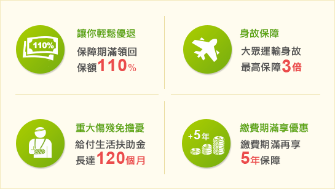

您知道除了投資虧損之外，還有什麼是退休計畫中斷的原因嗎？
您知道除了投資虧損之外，還有什麼是退休計畫中斷的原因嗎？
A : 根據2012年10大死因，不管是疾病或意外，都會造成退休計畫突然中止。合庫人壽「超優退」除了有基本的身故、全殘保障外，大眾運輸意外身故會自動提高最高3倍的保障；更重要的是，一旦因意外致成重大傷殘，將每月給付「生活扶助保險金」120個月，不用擔憂自己會造成家人嚴重的負擔。
想進一步了解「超優退」，請留下資料了解更多。
高齡化、少子化的社會衝擊下，您的退休金準備好了嗎？
A : 養個保險兒子，才是王道。根據統計，保險是國人用來累積退休金的第二名。
| 民眾用來累積退休金的理財工具 | |||||||
|---|---|---|---|---|---|---|---|
| 存款 : | 50.1% | 保險 : | 39.3% | 基金 : | 36.37% | 股票 : | 27% |
註：此項問券採複選方式。資料來源：中華民國退休基金協會
想進一步了解合庫人壽「超優退」，請留下資料了解更多。
四大保障
保障內容
案例分享

備註及重要訊息揭露
30歲優小姐，投保超優退保險金額300萬，選擇繳費10年期，保障期間15年期，選擇年繳每天約806元，即可享有如下6大保障：(將滑鼠移至您想了解的內容)
保障期滿領回
大眾運輸身故或
喪葬費用保險金
完全殘廢保險金
註2生活扶助保險金
身故或喪葬費用
註1豁免保險費
330萬滿期金
保險金額x110%
最高給付：
空中9,000,000元
水 / 陸上6,000,000元
(已加計身故保險金)
累積已繳保險費 註4
~3,000,000元
意外傷害1~6級殘廢
每月給付 30,000元
(共計120個月)
累積已繳保險費 註4
~3,000,000元
意外傷害2~6級殘廢
備註及重要訊息揭露
【超優退】快樂富足退休補充計畫免費索取資料
免費諮詢專線：0800-678-266